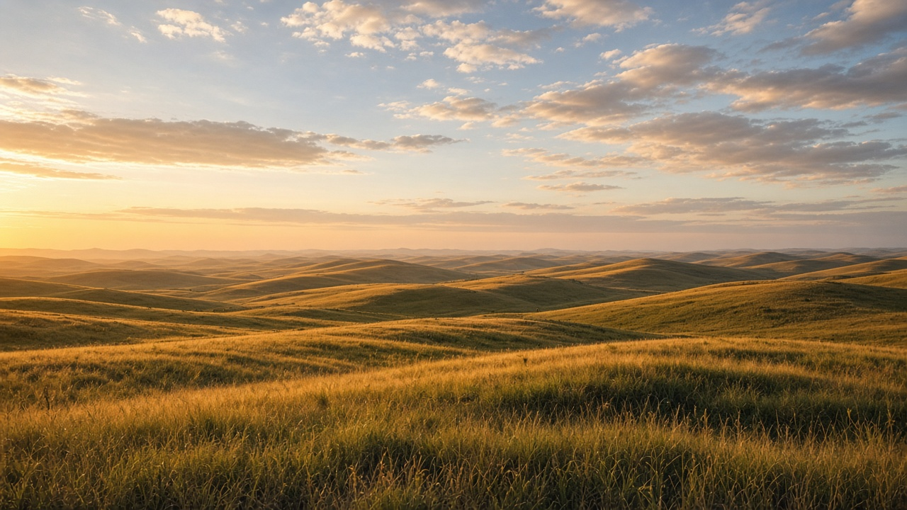
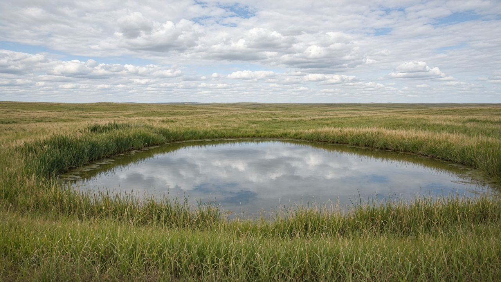
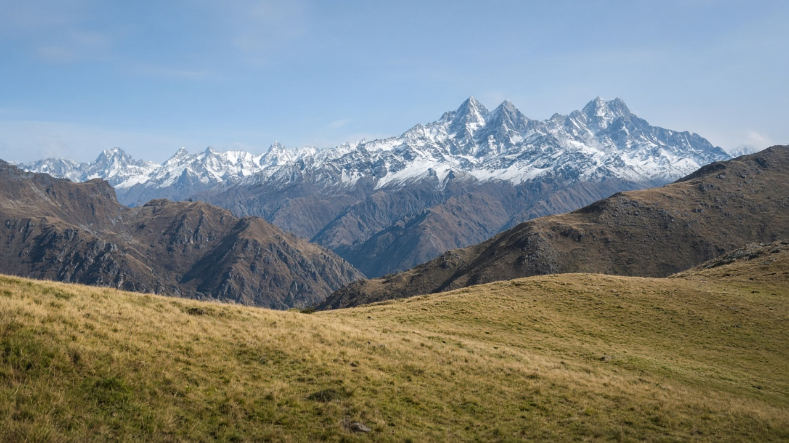

Grasslands, Prairies, and Steppe Ecosystems
Published on August 20, 2026

Grasslands, prairies, and steppes are terrestrial biomes where grasses and forbs dominate because rainfall, fire, grazing, or cold winters keep tree cover sparse. Tallgrass prairie, shortgrass steppe, montane meadow, and tropical savanna grassland share deep fibrous root systems that pack organic matter into soils far below the visible sward. Most of the living biomass and carbon is underground, so a green surface in the wet season can hide decades of soil building—or decades of loss if ploughed. Seasonal drought and fire recycle nutrients in standing dead grass, while large and small herbivores clip, trample, and fertilize patches, creating a mosaic of heights and ages. These systems are not empty land waiting for trees: they are complete ecosystems that regulate water infiltration, dust, and forage.
Conversion of native grassland to annual cropland or poorly managed pasture is among the largest terrestrial land-use changes of the last two centuries. Ploughing oxidizes soil carbon, breaks root networks, and exposes silt to wind and rain. Fire exclusion can allow shrubs and trees to thicken in some climates, while overgrazing without rest periods leaves bare soil and shallow-rooted weeds. Restoring grassland function means rebuilding basal cover, native species mixes, and disturbance regimes—prescribed fire, rotational grazing, or both—rather than only seeding a forage monoculture. Wetland pockets, riparian strips, and prairie potholes within grassland landscapes store extra water and should be mapped as part of the same terrestrial mosaic.
Management that respects grassland ecology sets stocking rates to residual cover, times rest to seed set, and avoids blanket afforestation of sites that historically never held closed forest. Soil organic carbon monitoring, grass basal measurements, and simple erosion pins tell more about condition than tree counts. In South Asia, terai grasslands, inner-valley meadows, and high Himalayan kharka pastures follow the same logic of seasonal growth, fire or frost, and grazing pressure, including in Nepal’s floodplain and alpine belts. Education that names grassland as a biome equal to forest helps land-use policy protect soil carbon, pastoral livelihoods, and water recharge instead of treating every open slope as a failed woodland to be planted wall to wall.

घाँसे मैदान, प्रेयरी र स्टेप स्थलीय बायोम हुन् जहाँ घाँस र फोर्ब प्रधान हुन्छन् किनभने वर्षा, आगो, चराइ वा चिसो जाडोले रूख आवरण पातलो राख्छ। अग्लो घाँस प्रेयरी, छोटो घाँस स्टेप, पहाडी खर्क र उष्ण सवाना घाँसे मैदानले गहिरो रेशादार जरा प्रणाली साझा गर्छन् जसले देखिने घाँसभन्दा धेरै तल माटोमा जैविक पदार्थ थुपार्छ। धेरैजसो जीवित बायोमास र कार्बन भूमिगत हुन्छ, त्यसैले भिजेको यामको हरियो सतहले माटो बनाइका दशक—वा जोत्दा हानिका दशक—लुकाउन सक्छ। मौसमी खडेरी र आगोले उभिएको मृत घाँसमा पोषक पुनःचक्र गर्छन् भने ठूला र साना शाकाहारीले प्याच काट्छन्, कुल्चिन्छन् र मल गर्छन्, उचाइ र उमेरको मोज़ेक बनाउँछन्। यी प्रणाली रूख पर्खने रित्तो जमिन होइनन्: तिनीहरू पानी प्रवेश, धुलो र घाँस नियमन गर्ने पूर्ण पारिस्थितिक प्रणाली हुन्।
मूल घाँसे मैदानलाई वार्षिक बाली जमिन वा कमजोर व्यवस्थापनको खर्कमा रूपान्तरण पछिल्ला दुई शताब्दीका सबैभन्दा ठूला स्थलीय भू-प्रयोग परिवर्तनमध्ये हो। जोताइले माटो कार्बन अक्सिडाइज गर्छ, जरा जाल तोड्छ र माटो हावा तथा वर्षामा खुला पार्छ। आगो बहिष्कारले केही जलवायुमा झाडी र रूख बाक्लो हुन दिन्छ भने विश्राम अवधिविना अति चराइले नाङ्गो माटो र कम गहिरो जराका झार छोड्छ। घाँसे मैदान कार्य पुनर्स्थापना भनेको आधार आवरण, मूल प्रजाति मिश्रण र अवरोध व्यवस्था—नियोजित आगो, चक्रीय चराइ वा दुवै—पुनर्निर्माण हो, केवल एउटा घाँसको एकजातीय बीउ छर्नु होइन। घाँसे परिदृश्यभित्रका सिमसार खल्ती, नदीकिनार पट्टी र प्रेयरी पोथोलले थप पानी राख्छन् र एउटै स्थलीय मोज़ेकका भागका रूपमा नक्सा गर्नुपर्छ।
घाँसे पारिस्थितिकी सम्मान गर्ने व्यवस्थापन बाँकी आवरणअनुसार चराइ दर तोक्छ, बीउ लाग्ने बेला विश्राम मिलाउँछ, र ऐतिहासिक रूपमा कहिल्यै बन्द वन नभएका स्थलमा व्यापक वृक्षारोपणबाट जोगिन्छ। माटो जैविक कार्बन निगरानी, घाँस आधार नाप र सरल क्षय पिनले रूख गन्तीभन्दा अवस्था बढी बताउँछन्। दक्षिण एसियामा तराई घाँसे मैदान, भित्री उपत्यका खर्क र उच्च हिमाली खर्क चराइ, मौसमी वृद्धि र आगो वा तुषारोको उही तर्क पछ्याउँछन्, नेपालका बाढी मैदान र अल्पाइन पट्टीसहित। घाँसे मैदानलाई वनसरह बायोम नाम दिने शिक्षाले भू-प्रयोग नीतिलाई माटो कार्बन, पशुपालन जीविकोपार्जन र पानी पुनर्भरण जोगाउन मद्दत गर्छ, प्रत्येक खुला भिरलाई पर्खाल-देखि-पर्खाल रोप्नुपर्ने असफल वुडल्यान्ड नमान्न।

घास मैदान, प्रेयरी और स्टेप स्थलीय बायोम हैं जहाँ घास और फोर्ब प्रधान होते हैं क्योंकि वर्षा, आग, चरान या ठंडी सर्दी वृक्ष आवरण विरल रखती है। ऊँची घास प्रेयरी, छोटी घास स्टेप, पर्वतीय घास मैदान और उष्ण सवाना घास भूमि गहरी रेशेदार जड़ प्रणालियाँ साझा करती हैं जो दिखती घास से बहुत नीचे मिट्टी में जैव पदार्थ ठूँसती हैं। अधिकांश जीवित बायोमास और कार्बन भूमिगत होता है, इसलिए गीले मौसम की हरित सतह मिट्टी निर्माण के दशक—या जुताई पर हानि के दशक—छिपा सकती है। मौसमी सूखा और आग खड़ी मृत घास में पोषक पुनश्चक्रित करते हैं जबकि बड़े और छोटे शाकाहारी पैच काटते, कुचलते और खाद देते हैं, ऊँचाई और आयु का मोज़ेक बनाते हैं। ये तंत्र वृक्ष की प्रतीक्षा करते खाली भूमि नहीं हैं: वे जल प्रवेश, धूल और चारा नियंत्रित करने वाले पूर्ण पारिस्थितिक तंत्र हैं।
मूल घास मैदान को वार्षिक फसल भूमि या कमजोर प्रबंधन वाले चरागाह में रूपांतरण पिछले दो सदियों के सबसे बड़े स्थलीय भू-उपयोग परिवर्तनों में है। जुताई मिट्टी कार्बन ऑक्सीकृत करती, जड़ जाल तोड़ती और गाद हवा व वर्षा के सामने खोलती है। आग बहिष्कार कुछ जलवायु में झाड़ी और वृक्ष घने होने देता है जबकि विश्राम अवधियों के बिना अति चरान नंगी मिट्टी और उथली जड़ वाले खरपतवार छोड़ता है। घास मैदान कार्य पुनर्स्थापना का अर्थ आधार आवरण, मूल प्रजाति मिश्रण और विक्षोभ व्यवस्था—नियोजित आग, चक्रीय चरान या दोनों—पुनर्निर्माण है, केवल एक चारा एकजातीय बीज बोना नहीं। घास परिदृश्य के भीतर आर्द्रभूमि जेब, नदी किनारे पट्टियाँ और प्रेयरी गर्त अतिरिक्त जल रखते हैं और उसी स्थलीय मोज़ेक के भाग के रूप में नक्शा किए जाने चाहिए।
घास पारिस्थितिकी का सम्मान करने वाला प्रबंधन अवशिष्ट आवरण के अनुसार स्टॉकिंग दर तय करता है, बीज लगने पर विश्राम समय करता है, और ऐतिहासिक रूप से कभी बंद वन न रहे स्थलों पर व्यापक वनीकरण से बचता है। मृदा जैव कार्बन निगरानी, घास आधार माप और सरल क्षय पिन वृक्ष गिनती से अधिक दशा बताते हैं। दक्षिण एशिया में तराई घास मैदान, भीतरी घाटी चरागाह और उच्च हिमाली खरक मौसमी वृद्धि, आग या पाला और चरान दबाव का वही तर्क अपनाते हैं, नेपाल के बाढ़ मैदान और अल्पाइन पट्टी सहित। घास मैदान को वन के बराबर बायोम नाम देने वाली शिक्षा भू-उपयोग नीति को मिट्टी कार्बन, पशुपालन आजीविका और जल पुनर्भरण बचाने में मदद करती है, प्रत्येक खुली ढलान को दीवार-से-दीवार रोपे जाने वाले असफल वुडलैंड न मानने में।